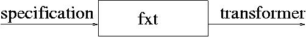
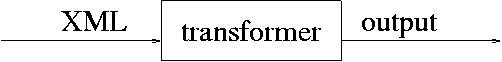

The application of fxt proceeds in two phases. In the generation phase fxt generates the desired transformer from a specification:
The generated transformer can be subsequently used to transform XML documents:
Output of the transformation is a sequence of text, XML elements, and processing instructions.
A transformation is specified by a sequence of match patterns and corresponding actions.
The transformation proceeds top-down over the hierarchical structure of the input document. At a sub-document in the hierarchy, the sequence of actions corresponding to the first matching pattern is performed.
Note: The match patterns in the specification always refer to the initial input document, not to the current sub-document under consideration.
The specification is expected to reside in a file having the tf file extension. The specification must be a valid XML document with fxt:spec as root element.
The fxt:spec element can contain one or more fxt:pat elements, each of them specifying a match pattern as its content. Patterns must be specified in the pattern language of fxgrep, a language similar with XPath. A description of fxgrep patterns is here.
Besides fxgrep patterns, a pattern default can be used for matching any sub-document in an XML document.
Every fxt:pat element is followed by a sequence of fxt actions specifying the result to be produced by the transformation for the sub-documents of the XML input document matching the pattern. The sequence of actions consists of the sequence of sub-documents between the triggering fxt:pat element and the next fxt:pat element or the end of the specification.
The result of an fxt action is a sequence of XML sub-documents. The result of a sequence of fxt actions is the concatenation of the result of the fxt actions in the sequence.
The following is a specification of a transformation, which given an XML document, produces a list of titles of the sections in the document:
<fxt:spec>
<fxt:pat>/*</fxt:pat>
<ul>
<fxt:apply/>
</ul>
<fxt:pat>//section/title/""</fxt:pat>
<li>
<fxt:current/>
</li>
<fxt:pat>default</fxt:pat>
<fxt:apply/>
</fxt:spec>
The first match pattern in the example above, /* matches the topmost element of the document to be transformed. The corresponding action specifies that the result must be an element of type ul, whose content is given by the fxt:apply action. The result of this action is the sequence of sub-documents obtained by applying the transformation recursively to the content of the current sub-document (which is here the topmost element).
The second rule says , that whenever text is found inside the title element of a section, a new li element should be created whose content is the matched text. The currently matched sub-document (which is here the matched text) is returned by the action fxt:current.
The rule for the default pattern says, that the transformation should otherwise simply proceed to the sequence of sub-documents in the content.
Running the generated transformation on the following XML document:
<document> <title>Sections</title> <section> <title>Section One</title> <content>Here is section 1...</content> </section> <section> <title>Section Two</title> <content>Here is section 2...</content> </section> </document>
produces:
<ul>
<li>
Section One
</li><li>
Section Two
</li>
</ul>
fxt takes as its input the specification of a transformation and generates SML files, a heap-image and a script to perform the required transformation.
fxt can be invoked with a command of the following form:
fxt [options] [specificationFile]
The following options are available:
Additionally, fxt understands all options documented for fxp, except the -i option which is reserved for the input file.
specificationFile must be a file containing the specification of the transformation to be generated. If no arguments are provided the specification is read from the standard input.
Invoking fxt with a specification file name.ext generates SML code to perform the required transformation. If the output of an executable is not disabled, the generated SML code is compiled and can be used via a generated shell script named name.sh for transforming XML documents according to the given specification. The transformation can be subsequently invoked by :
name.sh [option ...] [argument ...]
The following options are available:
Additionally, fxt understands all options documented for fxp, except the -i option which is reserved for the input file.
Further, argument-s must be provided only if the transformation requires some extra arguments.
Conceptually, XML documents are textual descriptions of trees, called document trees. Such a tree representation is provided by an XML parser. Constituting parts of a document tree are XML elements, text content and processing instructions. Accordingly, a document tree is composed of element, text and processing instruction nodes. XML comments are ignored.
The generated transformation has access to the tree representation via the current node which represents the sub-document being currently transformed and which can be referred to as current.
fxt's FDM (Functional Document Model) is an interface providing useful functions for manipulating XML documents. FDM is described here.
In the following examples we will use functions provided by the FDM. XML documents can contain any legal Unicode character. SML, however, supports only 8-bit characters and has no notion of Unicode. Therefore, a structure Unicode is provided as a Unicode interface containing types for the Unicode characters and strings, along with basic functions for manipulating them. Unicode strings are represented by the type Unicode.Vector. Therefore, anywhere XML character data must be specified as SML code, the specified code must evaluate to a value of type Unicode.Vector. Values of the SML type string and SML functions for the string manipulation can be used to specify XML characters in combination with the conversion functions Unicode.String2Vector and Unicode.Vector2String. The Unicode structure is presented here. The Unicode structure is automatically opened in the generated code, thus the functions provided can be used un-prefixed by Unicode..
In the following, a description of the fxt actions is given.
Elements not prefixed by fxt: (normal elements) appearing in actions are exactly reproduced in the output of the transformation.
As an example consider the following transformation:
<fxt:spec>
<fxt:pat>*</fxt:pat>
<html>
<head>
<title>Example</title>
</head>
<body>
</body>
</html>
</fxt:spec>
The generated transformation transforms any XML document (whose root is matched by *) to an empty HTML document:
<html>
<head>
<title>Example</title>
</head>
<body>
</body>
</html>
The previous example is not very interesting, as the input document is not considered when producing the output. For a reasonable transformation we need to recursively use the transformation on sub-documents of the initial input document.
If a default pattern is not specified, an action is added by default. The default action is to be performed when the transformation is applied on a sub-document that does not match any other specified pattern. The default action produces a sub-document that has the root of the matched sub-document as its root and the result of applying the transformation on the content of the matched sub-document as its content.
The following specification uses an explicit action and the default action to generate a transformation where all italic elements are replaced by i elements containing the text "Hello!":
<fxt:spec>
<fxt:pat>//italic</fxt:pat>
<i>Hello!</i>
</fxt:spec>
For the following XML document:
<doc>
<italic>Some text written in italic</italic>
<bold>
<italic>Some text written in bold-italic</italic>
</bold>
</doc>
the generated transformation produces:
<doc>
<i>Hello!</i>
<bold>
<i>Hello!</i>
</bold>
</doc>
The fxt:apply element produces a sequence of sub-documents by concatenating the results of recursively applying the transformation on the content of the current sub-document.
fxt:apply may have an attribute test whose value must be a predicate over trees (Tree -> bool). In this case the transformation is recursively applied only on the sub-documents (i.e. Trees) satisfying the predicate.
The transformation specified in the previous subsection replaced italic elements by i elements with some fixed content. If we want the italic elements to be replaced by i elements with the same content we can rewrite the specification as follows:
<fxt:spec>
<fxt:pat>//italic</fxt:pat>
<i><fxt:apply/></i>
</fxt:spec>
The same XML input file as above is now transformed to:
<doc>
<i>Some text written in italic</i>
<bold>
<i>Some text written in bold-italic</i>
</bold>
</doc>
The transformation above replaces even imbricated italic elements.
It is possible to select other sub-documents than the direct sub-documents of the current document. For this purpose an attribute select may be used, specifying an fxgrep select pattern. The presence of the select pattern in the select attribute, indicates that the transformation proceeds recursively on the top-most sub-documents of the current document which are matched by the specified select pattern in the context of the current sub-document. The selected sub-documents are processed in the order in which they appear in the input.
The pattern can be also specified as the value of an attribute selectExp, which must be an SML expression of type Unicode.Vector.
Note that select patterns are conceptually speaking dynamic patterns, i.e. they are defined in the dynamic context of the match node being currently transformed. However, rather than dynamically evaluating the select patterns, which can be very costly, fxt automatically translate rules containing select patterns into rules using fxgrep binary patterns. Binary patterns can be also directly used in fxt transformations as described in the next section.
In many cases the nodes to be selected within a rule for the recursive application of the transformation rules on them are already denoted by symbols in the match pattern of the rule. These nodes can be selected using binary match patterns. The nodes to be selected are specified by preceding the corresponding symbols in the match pattern by the % percent symbol. To recursively apply the transformation on these nodes, an fxt:apply element having a select attribute with an integer value can be used. The integer value is the ordinal number of the % in the pattern (the first % occurrence has the ordinal number 1). The selected nodes are processed in the order in which they appear in the input.
Suppose we have an XML document describing the output of some compiler:
<program>
<declarations>
<warning>Variable i redeclared</warning>
</declarations>
<error>Unexpected assignment</error>
<main>
<error>Undeclared variable j</error>
<warning>Deprecated method doAll</warning>
</main>
</program>
If the compiler report contains both errors and warnings, we want to output a list containing the errors in bold text followed by the warnings in italic. One can achieve this using binary patterns with the following transformation:
<fxt:spec>
<fxt:pat>program[(//%error)][(//%warning)]</fxt:pat>
<list>
Errors:
<fxt:apply select="1"/>
Warnings:
<fxt:apply select="2"/>
</list>
<fxt:pat>//error</fxt:pat>
<b><fxt:apply/></b>
<fxt:pat>//warning</fxt:pat>
<i><fxt:apply/></i>
</fxt:spec>
The output of the transformation on the XML input as above is:
<list>
Errors:
<b>Unexpected assignment</b><b>Undeclared variable j</b>
Warnings:
<i>Variable i redeclared</i><i>Deprecated method doAll</i>
</list>
The fxt:copyContent element reproduces the sequence of sub-documents representing the content of the current sub-document. If the current sub-document is an element, the result is the sequence of its sons. If the current sub-document is a processing instruction the result is its text content. If the current sub-document is some character data, the result is the character data itself.
The following specification:
<fxt:spec>
<fxt:pat>//italic</fxt:pat>
<i><fxt:copyContent/></i>
</fxt:spec>
produces from the following input:
<doc>
<italic>
<bold>
<italic>Some text</italic>
</bold>
</italic>
</doc>
the following output:
<doc>
<i>
<bold>
<italic>Some text</italic>
</bold>
</i>
</doc>
Notice that when the first italic element is transformed, italic is replaced by i and its content is copied unchanged.
fxt:copyContent may also be used with a select pattern specified as the value of an attribute select. In this case the top-most matches of the specified pattern, considered in the context of the current match are reproduced.
As in the case of fxt:apply, the nodes to be output by an fxt:copyContent element can be selected by using binary patterns as match patterns.
Suppose we have the following XML input document
<company> <url>spice.girls</url> <empl><name>Mel A.</name></empl> <empl><name>Mel B.</name></empl> <empl><name>Mel C.</name></empl> </company>
The transformation to produce a homepage element for each employee can be specified as:
<fxt:spec>
<fxt:pat>//company[%url]/empl</fxt:pat>
<homepage>
<body>Under construction.
See the company's page:<link><fxt:copyContent select="1"/></link>
</body>
</homepage>
</fxt:spec>
Note that using binary patterns is the only way how one can select sub-documents from the input document which are not descendants of the current sub-document.
The fxt:copyType element produces a sub-document with the same type as the current sub-document. The content of the produced sub-document is given by the content of the fxt:copyType. Possible attributes of the current sub-document are not copied. If the current sub-document is an element, an element with the same type is produced. If the current sub-document is a processing instruction, a processing instruction for the same target the produced, with a text content given by the content of the fxt:copyType element, which in this case must contain only character data. If the current sub-document is some text, the text is reproduced in the output.
The following specification generates a transformation which embeds all the elements having an attribute importance with a value of great in bold elements:
<fxt:spec>
<fxt:pat>//*[@importance="great"]</fxt:pat>
<bold>
<fxt:copyType>
<fxt:apply/>
</fxt:copyType>
</bold>
</fxt:spec>
The following input:
<manual> <ch>Unpacking</ch> <ch importance="great">Before you begin</ch> <ch>Troubleshooting</ch> </manual>
is transformed by the generated transformation to:
<manual>
<ch>Unpacking</ch>
<bold>
<ch>Before you begin</ch>
</bold>
<ch>Troubleshooting</ch>
</manual>
The fxt:copyAttributes element returns nothing, i.e. the empty sequence of sub-documents, but acts through a side-effect.If the current sub-document is an XML element, fxt:copyAttributes copies the attributes of the current sub-document in the list of attributes of the surrounding element in the output document. Attributes that are already present are overwritten. Nothing happens if the current node is not an element.
The following is the specification of a transformation that replaces all elements with a elements retaining the initial attributes:
<fxt:spec>
<fxt:pat>//*</fxt:pat>
<a><fxt:copyAttributes/><fxt:apply/></a>
</fxt:spec>
The following input:
<doc>
<x alfa="1" beta="2">
<y gama="3"/>
</x>
</doc>
is transformed by the generated transformation to:
<a>
<a beta='2' alfa='1'>
<a gama='3'></a>
</a>
</a>
The fxt:addAttribute, fxt:deleteAttribute and fxt:replaceAttribute elements add, delete and replace respectively attributes in the list of attributes of the surrounding element in the output document.
fxt:addAttribute must provide the name and the value of the attribute to be inserted. These may be provide directly as values for the attributes name and val respectively, or alternatively as SML expressions of type Unicode.Vector as values for the attributes nameExp and valExp respectively. Here is an action inserting an attribute named degrees having as value the string "12" followed by the sign for Celsius degree.
<fxt:addAttribute name='degrees' valExp='concatVectors (String2Vector "12",#[0wx2103])'/>
If an attribute with the same name is already present in the list of attributes of the element where the new attribute is to be added, the old value is overwritten by the specified value. Nothing happens if the current node is not an element.
Similarly, fxt:replaceAttribute changes the value of the attribute indicated by the name or nameExp attribute with the value indicated by the val or valExp attribute. The list of attributes remains unchanged if the current node has no attribute with the specified name.
The fxt:deleteAttribute removes the attribute with the name specified by the name or nameExp attribute from the attribute list of the surrounding element in the output.
The fxt:current element produces an exact copy of the current sub-document.
If the current sub-document is an XML element, fxt:copyTag produces an element with the same type, the same attributes and a content specified by the content of the fxt:copyTag element. An exception is thrown at transformation time if the current sub-document is not an element. It is thus a potential error if fxt:copyTag appears in a sequence of actions corresponding to a pattern that matches something else than an element.
Instead of copying the current element node and explictly including its attributes:
<fxt:copyType> <fxt:copyAttributes/> ..... </fxt:copyType>
one could write:
<fxt:copyTag> ..... </fxt:copyTag>
If the current sub-document is an element, the fxt:copyTagApply element produces an element with the same type, the same attributes and a content obtained as the concatenation of the sub-documents resulting from recursively applying the transformation on the content of the current element. The content is obtained in this case as by an fxt:apply element. If the current sub-document is not an element (i.e. it is either some text or a processing instruction) fxt:copyTagApply produces a copy of the current sub-document.
Thus, if the current sub-document is an XML element the following sequence:
<fxt:copyTag> <fxt:apply/> </fxt:copyTag>
can be shorten to:
<fxt:copyTagApply/>
The fxt elements presented in this subsection are useful shortcuts for the case when the current sub-document is an XML element.
The current element can be copied together with its attributes and a new attribute can be added with fxt:copyTagAddAttribute. The name and the value of the new attribute may be specified as in the case of fxt:addAttribute directly as values for the name and val attributes, or as SML expressions specified as values of nameExp and valExp attributes. The content of the produced node is given by the content of the fxt:copyTagAddAttribute element. Thus:
<fxt:copyTag> <fxt:addAttribute name="attributeName" val="attributeValue"/> .... </fxt:copyTag>
can be replaced by:
<fxt:copyTagAddAttribute name="attributeName" val="attributeValue"> .... </fxt:copyTagAddAttribute>
Similarly:
<fxt:copyTag> <fxt:deleteAttribute name="attributeName"/> .... </fxt:copyTag>
can be replaced by:
<fxt:copyTagDeleteAttribute name="attributeName"> .... </fxt:copyTagDeleteAtribute>
and
<fxt:copyTag> <fxt:replaceAttribute name="attributeName" val="attributeValue"/> .... </fxt:copyTag>
can be shorten to:
<fxt:copyTagReplaceAttribute name="attributeName" val="attributeValue"> .... </fxt:copyTagReplaceAtribute>
An element sub-document whose name is computed at the transformation time can be produced by the fxt:tag action. The name of the element must be specified as the value of an fxt:name attribute and must evaluate to a Unicode string, i.e. to Unicode.Vector. Other attributes of the fxt:tag element are copied in the output. The content of the output element is given by the content of the fxt:tag element.
The following is the specification of a transformation that prefixes all the element names by myNamespace and adds an attribute name with a value alfa in their attributes lists:
<fxt:spec>
<fxt:pat>//*</fxt:pat>
<fxt:tag
fxt:name='concatVectors
(String2Vector "myNamespace:",
(getElementType current))'
name="alfa">
<fxt:apply/>
</fxt:tag>
</fxt:spec>
Running the generated transformation on the following input:
<a a="1"> <b b="2"/> </a>
produces:
<myNamespace:a name='alfa'> <myNamespace:b name='alfa'></myNamespace:b> </myNamespace:a>
Notice: The use of fxt:tag makes sense when the name of the element to be output is neither some constant (case in which it can be directly written in the specification as it is to appear in the output) nor the name of the current element (that could be output using copyType for example).
Text computed at transformation time can be produced using the fxt:text element. fxt:text must have an attribute code whose value must evaluate to a value of the type Unicode.Vector.
The following transformation replaces today elements occurring anywhere in the input document by the current time (in seconds since January 1, 1970):
<fxt:spec>
<fxt:pat>//today</fxt:pat>
Seconds since January 1, 1970:
<fxt:text code='String2Vector (Time.toString (Time.now ()))'/>
</fxt:spec>
From the result for the following input:
<doc> <today/> </doc>
which is:
<doc>
Seconds since January 1, 1970:
1001939178.783
</doc>
you can exactly calculate the date when the output was produced...:).
If the current node is a text node or an element node containing just text, then the current text, or the the current text respectively could be output by:
<fxt:text code='getTextContent current'/>The same is achieved by the fxt:currentText shortcut:
<fxt:currentText/>
A space can be output using fxt:sp:
<fxt:sp/>A horizontal tab can be output using fxt:ht:
<fxt:ht/>A carriage return can be output using fxt:cr:
<fxt:cr/>Note that <fxt:sp/>,<fxt:ht/> and <fxt:cr/> are shortcuts for <fxt:text code='#[0wx0020]'/>,<fxt:text code='#[0wx0009]'/> and <fxt:text code='#[0wx000D]'/> respectively.
The value of an attribute of the current node, say with the attribute name attName could be output by:
<fxt:text code='getAttribute (String2Vector "attName") current'/>The same is achieved by the fxt:attribute shortcut, which expects the attribute name as the value of an attribute name or as an SML expression of type Unicode.Vector provided as a value for an attribute nameExp:
<fxt:attribute name='attName'/>
Processing instructions can be output using the element fxt:pi. The processor and the processing instruction itself can be specified either directly as values for the processor and data attributes respectively, or as SML expressions of type Unicode.Vector provided as values for the processorExp and dataExp attributes respectively.
fxt permits the use of variables organized as stacks with global visibility. The variables must be declared before the first fxt:pat using an fxt:global element. This element must have an attribute name and an attribute type. The name attribute specifies the name of the stack variable, and must be a valid SML identifier. The type attribute specifies the type of the elements in the stack variable. This might be one of the int, real, bool or string SML types, the Tree or Forest type from the FDM, or some SML user defined type. The fxt:global element may have an attribute toForest whose value must be a conversion function from the declared type to Forest. This function is in this case used when values from the stack are to be inserted in the output document. If no toForest attribute is specified and the declared type is other than int, real, bool, string, Tree or Forest, then nothing is output when a value from that stack is to be inserted in the output.
A value can be pushed onto a stack using the fxt:push element. fxt:push must have an attribute name containing the name of the stack variable and an attribute val whose value must evaluate to a value of the type declared for the variable name.
The value on the top of a stack can be reproduced in the output using the fxt:get element. fxt:get must have an attribute name specifying the name of the stack variable. If a value of a toForest was specified as a conversion function to a forest when the variable was declared, then the forest obtained by applying the conversion on the value is output. Otherwise, if the value has type string, the string is output. If the value has type int, real or bool, a string representation for the int, real or bool respectively is output. If the element has type Tree or type Forest, the tree or the forest respectively is output. If the stack is empty an exception is thrown.
fxt:pop pops off the value from the top of a stack. An attribute name is required to specify the name of the stack variable. If the stack is empty an exception is thrown.
The value on top of a stack can be modified using fxt:set. An attribute name must specify the name of the stack variable to be modified. An attribute val must specify the new value to replace the value on top as a piece of SML code. If the stack is empty an exception is thrown.
fxt:inc may be used to increment the value on top of the stack (provided this has integer type). The name of the variable must be specified as the value of an attribute name.
The following exemplifies the use of the fxt actions introduced above. The specification generates a transformation that given an XML document containing imbricated li elements (list items), adds before every li an integer representing the number of the list item on its imbrication level:
<fxt:spec>
<fxt:global name="i" type="int"/>
<fxt:push name="i" val="0"/>
<fxt:pat>//li</fxt:pat>
<fxt:get name="i"/>:
<fxt:copyTag>
<fxt:inc name="i"/>
<fxt:push name="i" val="0"/>
<fxt:apply/>
<fxt:pop name="i"/>
</fxt:copyTag>
</fxt:spec>
A global stack i containing integers is declared and a zero is pushed onto the stack. Whenever an li element is transformed, the value on top of the stack is output using fxt:get. The li tag is copied, and before proceeding with the transformation to the sons, the value on top of the stack, representing the counter for the current imbrication level is incremented and a new value of zero is pushed onto the stack for the next imbrication level. The value is popped off the stack after the sons are transformed.
The following input:
<doc>
<li>
<li>
<li>a</li>
<li>b</li>
</li>
<li>
<li>e</li>
</li>
</li>
<li>
<li>g</li>
<li>h</li>
<li>i</li>
</li>
</doc>
is transformed to:
<doc>
0:
<li>
0:
<li>
0:
<li>a</li>
1:
<li>b</li>
</li>
1:
<li>
0:
<li>e</li>
</li>
</li>
1:
<li>
0:
<li>g</li>
1:
<li>h</li>
2:
<li>i</li>
</li>
</doc>
The next example illustrate the use of Tree variables. Consider a document having group elements which contains a chief element and some employee elements in this order. We want to rearrange the document such that group elements contain only employee elements, and that each employee has the chief element for the chief in her group. The specification to generate this transformation is:
<fxt:spec>
<fxt:global name="chief" type="Tree"/>
<fxt:pat>//group/chief</fxt:pat>
<fxt:push name="chief" val="current"/>
<fxt:pat>//group/employee</fxt:pat>
<fxt:copyTag>
<fxt:get name="chief"/>
<fxt:apply/>
</fxt:copyTag>
<fxt:pat>//group[_chief_(employee)*_]</fxt:pat>
<fxt:copyTagApply/>
<fxt:pop name="chief"/>
</fxt:spec>
The generated transformation transforms the following input:
<groups>
<group>
<chief>
<name>Tim</name>
<id>21</id>
</chief>
<employee>
<name>Sandra</name>
<id>12</id>
</employee>
<employee>
<name>George</name>
<id>64</id>
</employee>
</group>
</groups>
to:
<groups>
<group>
<employee><chief>
<name>Tim</name>
<id>21</id>
</chief>
<name>Sandra</name>
<id>12</id>
</employee>
<employee><chief>
<name>Tim</name>
<id>21</id>
</chief>
<name>George</name>
<id>64</id>
</employee>
</group>
</groups>
The stack variables can also be used within SML code. Their names must be prefixed by G (i.e a global named i is referred G.i within SML code). The stack variables can be manipulated using the SML functions from the Globals with the following signature:
signature GLOBALS =
sig
type 'a Stack
val isEmpty : 'a Stack -> bool
val push : 'a Stack -> 'a -> unit
val pop : 'a Stack -> 'a
val get : 'a Stack -> 'a
val set : 'a Stack -> 'a -> unit
val int2Forest : int Stack -> Fdm.Forest
val bool2Forest : bool Stack -> Fdm.Forest
val real2Forest : real Stack -> Fdm.Forest
val string2Forest : string Stack -> Fdm.Forest
val Tree2Forest : Fdm.Tree Stack -> Fdm.Forest
val Forest2Forest : Fdm.Forest Stack -> Fdm.Forest
end
where:
Values of type Forest can be pushed or set as described in the previous section using fxt:set or fxt:push respectively. The value must then be indicated as the value of an attribute val, which must evaluate to a Forest.
A Forest value can be also constructed and pushed or set, using the actions fxt:pushForest or fxt:setForest respectively. fxt:pushForest and fxt:setForest must have an attribute name specifying the name of the global on top of which the forest value is to be pushed or set. The forest value is specified as the content of the elements fxt:pushForest or fxt:setForest which can consist of any sequence of fxt actions.
The following is the specification of a transformation that adds at the end of an xhtml document the list of links to the anchors in the document:
<fxt:spec>
<fxt:global name="index" type="Forest"/>
<fxt:pat>xhtml</fxt:pat>
<fxt:push name="index" val="emptyForest"/>
<fxt:copyTagApply/>
<fxt:pop name="index"/>
<fxt:pat>//a[@name]</fxt:pat>
<fxt:setForest name="index">
<fxt:get name="index"/>
<a>
<fxt:attribute name='name'/>
<fxt:addAttribute
name='href'
val='concatVectors
(String2Vector "#",
(getAttribute (String2Vector "name") current))'/>
</a>
</fxt:setForest>
<fxt:copyTagApply/>
<fxt:pat>//index</fxt:pat>
<p>Index:</p>
<p><fxt:get name='index'/></p>
</fxt:spec>
The following input document:
<xhtml> <p>Text</p> <a name="a1"/> <p>Text</p> <a name="a2"/> <p>Text</p> <a name="a3"/> <p>That was it.</p> <index/> </xhtml>
is transformed to:
<xhtml>
<p>Text</p>
<a name='a1'></a>
<p>Text</p>
<a name='a2'></a>
<p>Text</p>
<a name='a3'></a>
<p>That was it.</p>
<p>Index:</p><p><a href='concatVectors (String2Vector "#", (getAttribute (String2Vector "name") current))'>
a1
</a><a href='concatVectors (String2Vector "#", (getAttribute (String2Vector "name") current))'>
a2
</a><a href='concatVectors (String2Vector "#", (getAttribute (String2Vector "name") current))'>
a3
</a></p>
</xhtml>
The fxt:if element can be used if a sequence of actions should be executed only if some condition is fulfilled. The condition must be specified as the value of an attribute test of the fxt:if element. This value must evaluate to a boolean. The sequence of actions is specified as the content of fxt:if. If the test value evaluates to true, the output result is given by the content of fxt:if. Otherwise, the output result is empty.
Consider the specification of the transformation that numbered imbricated list items presented above. If we want to output only the first two items from any list we must modify the specification as follows:
<fxt:spec>
<fxt:global name="i" type="int"/>
<fxt:push name="i" val="1"/>
<fxt:pat>//li</fxt:pat>
<fxt:if test='(Globals.get G.i) < 3'>
<fxt:get name="i"/>:
<fxt:copyTag>
<fxt:set name="i" val='(Globals.get G.i)+1'/>
<fxt:push name="i" val="1"/>
<fxt:apply/>
<fxt:pop name="i"/>
</fxt:copyTag>
</fxt:if>
</fxt:spec>
Transforming the same document as above we obtain:
<doc>
1:
<li>
1:
<li>
1:
<li>a</li>
2:
<li>b</li>
</li>
2:
<li>
1:
<li>e</li>
</li>
</li>
2:
<li>
1:
<li>g</li>
2:
<li>h</li>
</li>
</doc>
The fxt:switch element specifies a group of conditions and a sequence of actions corresponding to each condition. The first sequence of actions whose corresponding condition evaluates to true is executed. A sequence of actions must be specified, which is to be executed when none of the conditions evaluates to true. A condition and the corresponding sequence of actions is specified by an fxt:case element in the content of fxt:switch. The condition must be specified as an attribute test of the fxt:case and must evaluate to a boolean. The corresponding sequence of actions is given by the content of fxt:case. The sequence of actions to be executed in case when none of the specified conditions evaluates to true, must be given as the content of an fxt:default element contained in the fxt:switch.
Notice: An fxt:switch having just one element fxt:case and one element fxt:default provides the if-then-else functionality.
The following is a transformation similar with the one above, but where, if the list contains more than two elements, a notice "And so on" is added for each further element:
<fxt:spec>
<fxt:global name="i" type="int"/>
<fxt:push name="i" val="1"/>
<fxt:pat>//li</fxt:pat>
<fxt:switch>
<fxt:case test='(Globals.get G.i) < 3'>
<fxt:get name="i"/>:
<fxt:copyTag>
<fxt:set name="i" val='(Globals.get G.i)+1'/>
<fxt:push name="i" val="1"/>
<fxt:apply/>
<fxt:pop name="i"/>
</fxt:copyTag>
</fxt:case>
<fxt:default>
And so on...
</fxt:default>
</fxt:switch>
</fxt:spec>
Transforming the same document as above we obtain this time:
<doc>
1:
<li>
1:
<li>
1:
<li>a</li>
2:
<li>b</li>
</li>
2:
<li>
1:
<li>e</li>
</li>
</li>
2:
<li>
1:
<li>g</li>
2:
<li>h</li>
And so on...
</li>
</doc>
fxt:sml can be used to evaluate an SML expression. The SML expression must be specified as the value of a code attribute. The fxt:sml element returns nothing. Its effect should be some side-effect of the evaluation of the expression.
The following specification generates a transformation that produces a copy of the input. The element names are printed in the order in which they are considered by the transformation.
<fxt:spec>
<fxt:pat>//*</fxt:pat>
<fxt:sml
code='print (Vector2String (getElementType current))'/>
<fxt:copyTagApply/>
</fxt:spec>
If the input is:
<a>
<b>
<c/>
</b>
<d/>
</a>
the transformation will print at the standard output (supposing that the output file is not the standard output) :
abcd
Keys are a generalization of XML ID-s. They are useful when the XML documents to be transformed have an inherent cross-reference structure that can not be represented directly by the XML document tree as for example in an XML representation of a graph. The key mechanism allows to collect sub-documents in a table which can be accessed via keys.
To use this mechanism an fxt:key element must be added to the prelude, before any rule. A name for the table must be specified by a name attribute. The sub-documents to be collected are specified via an fxgrep pattern as the value of an attribute select. If the key information is the value of an attribute of the element at the root of the tree being stored, the name of the attribute must be specified as the value of a key attribute. Alternatively, the key may be obtained from the tree being stored by an SML function of type Tree -> Unicode.Vector which must be specified as the value of an attribute keyExp.
To retrieve sub-documents associated with a key the fxt:copyKey element must be used. An attribute name must specify the name of the table. If the key is a value of an attribute of the current element, this may be specified by supplying the name of the attribute as the value of a key attribute. Alternatively, an attribute keyExp can specify the key as an SML expression having the type Unicode.Vector.
Given the following XML input document:
<graph> <node id="1">Trier</node> <node id="2">Bonn</node> <edge from="1" to="2"/> </graph>
the following specifies a transformation which lists all the connections between the cities:
<fxt:spec>
<fxt:key name='cities' select='//node' key='id' />
<fxt:pat>//edge</fxt:pat>
There is a way from:
<fxt:copyKey name='cities' key='from'/>
to:
<fxt:copyKey name='cities' key='to'/>
<fxt:pat>default</fxt:pat>
<fxt:apply/>
</fxt:spec>
in the form:
There is a way from:
<node id='1'>Trier</node>
to:
<node id='2'>Bonn</node>
It is possible to apply the transformation to the sub-documents associated with a key using the fxt:applyKey. The name of the table must be specified as the value of an attribute name. The key must be specified either as an SML expression of the type Unicode.Vector provided as the value of an attribute keyExp or as a Unicode string provided as the value of an attribute key like in the following example:
<fxt:spec>
<fxt:key name='cities' select='//node' key='id'/>
<fxt:pat>/*</fxt:pat>
Result = [<fxt:applyKey name='cities' key='1'/>]
<fxt:pat>default</fxt:pat>
<fxt:copyContent/>
</fxt:spec>
For the same input as above the output is:
Result = [Trier]
With fxt:key one can associate a key contained in a sub-document with the sub-document. fxt:table allows to associate a key contained in a sub-document with some arbitrary Unicode string, typically from the sub-document itself. Values for the name, select and key or keyExp attributes must be specified as for fxt:key. Furthermore an item attribute must specify a function that when applied on the selected document produces the information to be stored for the key in the table. To retrieve the information stored in a table an fxt:getTableItems element must be used, with attributes as for the fxt:copyKey element.
Given the following input:
<books>
<book id="1">How to write unmaintainable code</book>
<book id="2">Thinking in SML</book>
<book id="3">My first trillion</book>
<book id="4">XML-a quantitative approach</book>
<book id="5">Timetable</book>
<cite ref="1"/>
<a>
<cite ref="2"/>
</a>
<b>
<c/>
<d>
<cite ref="5"/>
</d>
</b>
<f/>
</books>
the following lists the titles of the referenced books:
<fxt:spec>
<fxt:table
name='bookTitles'
select='//book'
key='id'
item='getTextContent'/>
<fxt:pat>//cite</fxt:pat>
<fxt:getTableItems
name='bookTitles' key='ref'/> was referenced.
<fxt:pat>default</fxt:pat>
<fxt:apply/>
</fxt:spec>
The output:
How to write unmaintainable code was referenced. Thinking in SML was referenced. Timetable was referenced.
The name of the input file with which a transformation is invoked, is made available via a global inputFile. inputFile contains at the beginning of a transformation the string representing the name of the input file, or "-" if input is read from the standard input.
If extra arguments from the command line are needed, these must be declared before the first fxt:pat element using an fxt:arg element for each of them. This element must have an attribute name containing a name for the argument. Values for these arguments must be provided in the command line in the order in which the arguments are declared.The declared arguments are made available via globals having the specified names. Each of these globals contains at the beginning of the transformation the string value supplied for it in the command line.
The use of arguments supplied in the command line is illustrated by the following specification which generates a transformation that expects two extra arguments in the command line. The first argument specifies a header and the second a footer. The header and the footer are to be inserted as a header and a footer element respectively, the header as the first and the footer as the last element of the root element. The string containing the name of the input file is also reproduced in the header.
<fxt:spec>
<fxt:arg name="a"/>
<fxt:arg name="b"/>
<fxt:pat>*</fxt:pat>
<fxt:copyTag>
<header><fxt:get name="inputFile"/> - <fxt:get name="a"/></header>
<fxt:apply/>
<footer><fxt:get name="b"/></footer>
</fxt:copyTag>
</fxt:spec>
Consider as input:
<doc> <a/> <b/> </doc>
If the generated shell script is doit and the transformation is invoked with:
doit examples/test.xml MyHeader MyFooter
then the transformation output is:
<doc><header>/home/psi/aberlea/fxtools/fxt/XMLDoc/examples/test.xml - MyHeader</header> <a></a> <b></b> <footer>MyFooter</footer></doc>
Anywhere in the specification where the value of an attribute is required to evaluate to an SML value (e.g. a boolean as the test attribute in fxt:if or fxt:switch elements, Unicode.Vector as in the case of the name attribute in fxt:tag), the user may use SML code. The code can be entirely specified at the place where it is used. Sometimes, however, it is more convenient to collect it in a structure. To use code from some structure, a declaration using an fxt:open element must be used. An attribute structure must specify the name of the structure. If the structure is not one of the SML built-in structures or some of the structures provided by fxt, an attribute file must indicate the name of the file containing the structure. The variables defined in the structure may be used as non-qualified names, as the structure will automatically be opened in the generated code.
Supposing we have written in a file count.sml a structure named Count containing a function count having the type Tree -> int a possible way to use it is:
<fxt:spec>
<fxt:open file='count.sml' structure='Count'/>
<fxt:global name='i' val='0'/>
<fxt:pat>default</fxt:pat>
<fxt:set name='i' val='count current'/>
<fxt:getInt name='i'/>
</fxt:spec>
fxt elements before the first fxt:pat element can be used either to specify some general features of the generated transformation as in the case of fxt:global, fxt:arg or fxt:open , or they can specify some actions to be performed before the transformation begins (pre-actions). A pre-action can be specified by one of the fxt:push, fxt:pop, fxt:set or fxt:sml elements.
Some fxt actions can be supplied with a sort, test or finalize attribute, specifying how the forest they are producing or the forest representing their content is to be sorted, filtered or finalized in the output respectively.
The actions producing a forest that can be sorted, filtered or finalized in the output are: fxt:apply, fxt:get and fxt:copyContent.
The actions producing an element whose content can be sorted, filtered or finalized are: fxt:tag, fxt:copyType, fxt:copyTagAddAttribute, fxt:copyTagDeleteAttribute, fxt:copyTagReplaceAttribute and fxt:copyTag.
The fxt:setForest and fxt:pushForest elements may also contain the sort, test or finalize attributes which then refers to the forest being stored.
If one of the actions enumerated above has an attribute sort, then the output forest, in case the action produces a forest, or the forest representing its content,in case the action produces a tree, will be sorted in the output using a specified sorting key.
The sorting key is given by the value of a sort attribute which must evaluate to a function of type Tree ->'a.
An ord attribute, having a value of either ascending, or descending may specify the desired order. The default is the ascending order.
If defined for the type 'a (as for example the built-in types int, char, string, real), the < or > operators are used in the sorting. If < and > are not defined for 'a, the user must supply as the value of an attribute lt, a function having the type 'a * 'a -> bool, which returns true if the first argument is less than the second. This function is then used in the sorting. The user may provide a value for the lt attribute even when < and > are available for the type 'a if the relation order implied by them is unsatisfying.
The use of the sort attribute is illustrated by the following examples. First, the specification that generates a transformation where a list of players is sorted after their names:
<fxt:spec>
<fxt:pat>//atp</fxt:pat>
<fxt:copyTag>
<fxt:apply
sort='(fn t =>
if hasElementType (String2Vector "player") t
then
getTextContent
(filterFirst
(hasElementType
(String2Vector "name"))
(sons t))
else nullVector)'
lt='UnicodeVectorlt'/>
</fxt:copyTag>
</fxt:spec>
The following input:
<atp>
<player>
<name>Smith, John</name>
<points>1200</points>
</player>
<player>
<name>Nastase, Ilie</name>
<points>1500</points>
</player>
<player>
<name>McEnroe, John</name>
<points>950</points>
</player>
</atp>
is transformed to:
<atp>
<player>
<name>McEnroe, John</name>
<points>950</points>
</player><player>
<name>Nastase, Ilie</name>
<points>1500</points>
</player><player>
<name>Smith, John</name>
<points>1200</points>
</player></atp>
The players are sorted in descending order after their number of points by the transformation produced from the following specification:
<fxt:spec>
<fxt:pat>//atp</fxt:pat>
<fxt:copyTag>
<fxt:apply
sort='(fn t =>
if hasElementType (String2Vector "player") t
then
(String2Int
(Vector2String
(getTextContent
(filterFirst
(hasElementType (String2Vector "points"))
(sons t)))))
else 0)'
ord='descending'/>
</fxt:copyTag>
</fxt:spec>
For the same input as above the transformation produces:
<atp><player>
<name>Nastase, Ilie</name>
<points>1500</points>
</player><player>
<name>Smith, John</name>
<points>1200</points>
</player><player>
<name>McEnroe, John</name>
<points>950</points>
</player>
</atp>
A filter attribute whose content must evaluate to a predicate over trees may specify that only the trees that satisfy the predicate are to appear in the output forest.
A finalize attribute whose content must evaluate to a function over forests returning a forest, may indicate a final transformation over a forest before being output.
The following are reserved names and should not be redefined by the user: current, accumulatedAttributes, prelucratedSons, eC, eC2, inputFile, as well as all the variable names defined in the FDM.
fxt ignores white spaces occurring within recognized fxt elements. Spaces occurring within other elements are considered normal text and are reproduced in the output.
Extra white spaces can be generated, if necessary, using fxt:text. For example to insert a newline followed by a tab one could use:
<fxt:text='String2Vector "\n\t"'>
fxt may report XML parse errors, fxgrep errors, fxt specification errors, SML coding errors and SML runtime errors.
Errors in the XML document containing the fxt specification are reported in the generation phase. If an error is found, the generation of the transformer terminates.
Errors in the XML document to be transformed are reported in the transformation phase. The transformation continues even if errors are found, however the result might not be the expected one.
If the specified patterns are not valid fxgrep patterns an error is reported in the generation phase and the generation terminates.
Notice: As the patterns are specified in an XML document, special symbols like <, > must be escaped as <, >, etc.
Errors in the fxt specification are reported in the generation phase. If an error is found, the generation terminates.
SML coding errors are reported by the SML compiler at the generation phase. The error messages of the compiler refer to the sml files produced by the generator in the subdirectory TF. The transformer itself is generated in a file having the suffix Fxt.sml, where the generated code is annotated with comments referring to the specification used.
Runtime errors are reported by the SML runtime-system in the transformation phase.
Managing multiple input files and multiple specifications, extending the pattern language, considering comments, CDATA sections, entities, ID and IDREFS in the FDM are intended to be implemented in future releases.